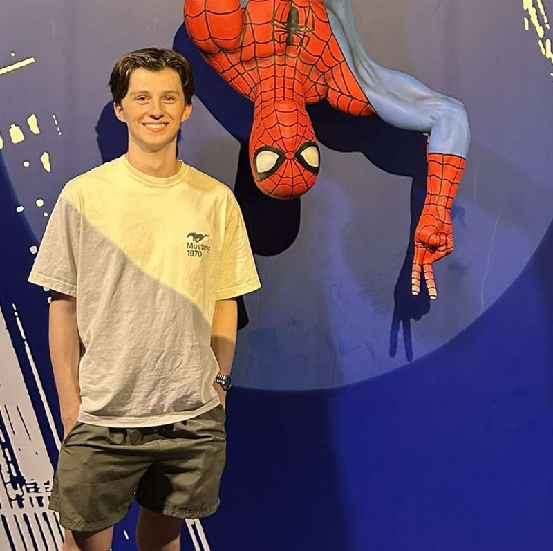

Lewis University Email: kylenbledsoe@lewisu.edu
Discord: @gamer_pig
My name is Kyle Bledsoe, and I am currently a sophomore majoring in physics and secondary education, with a minor in mathematics, at Lewis University. I grew up in Plainfield, Illinois, and live with my parents, my sister Alynn, and my dog Scout. I have a strong interest in STEM and also enjoy film and video games. My favorite movie is Oppenheimer, and my current favorite game is Dead by Daylight.
Learn more about my music taste here: Spotify
I’m more of a night-owl than a morning person. I tend to stay up late working on random creative projects, as that’s when my mind feels most clear. Getting up early for class usually requires some sort of caffeinated beverage!